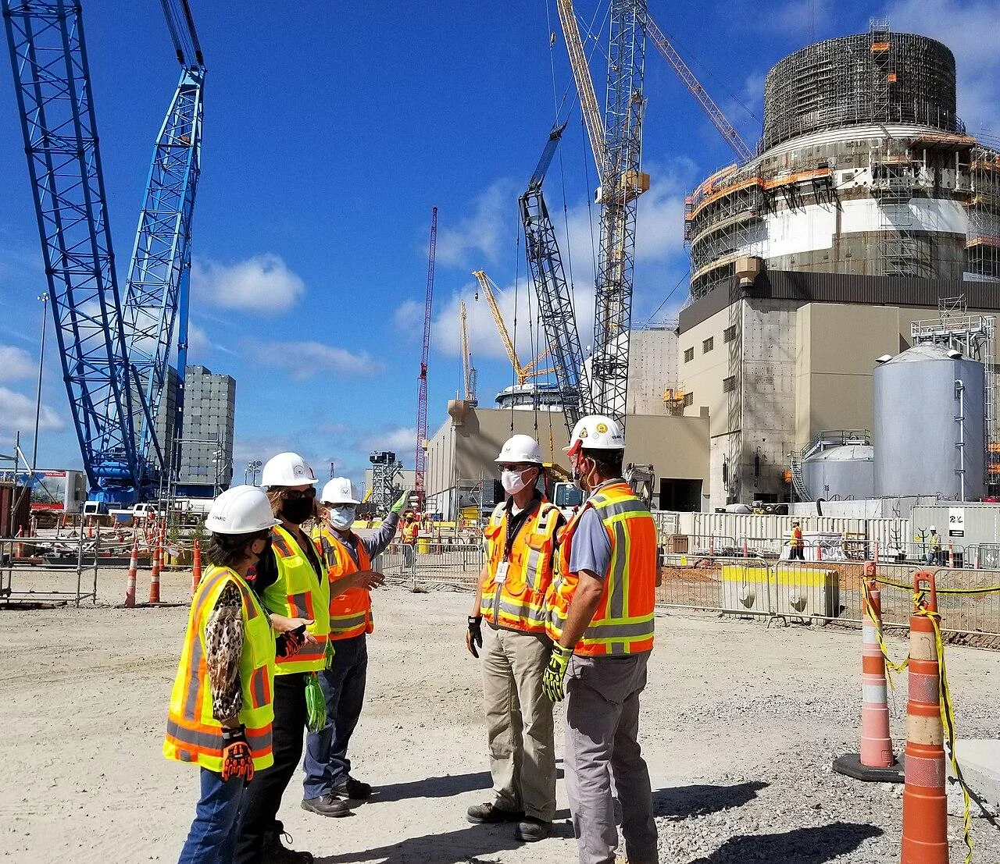
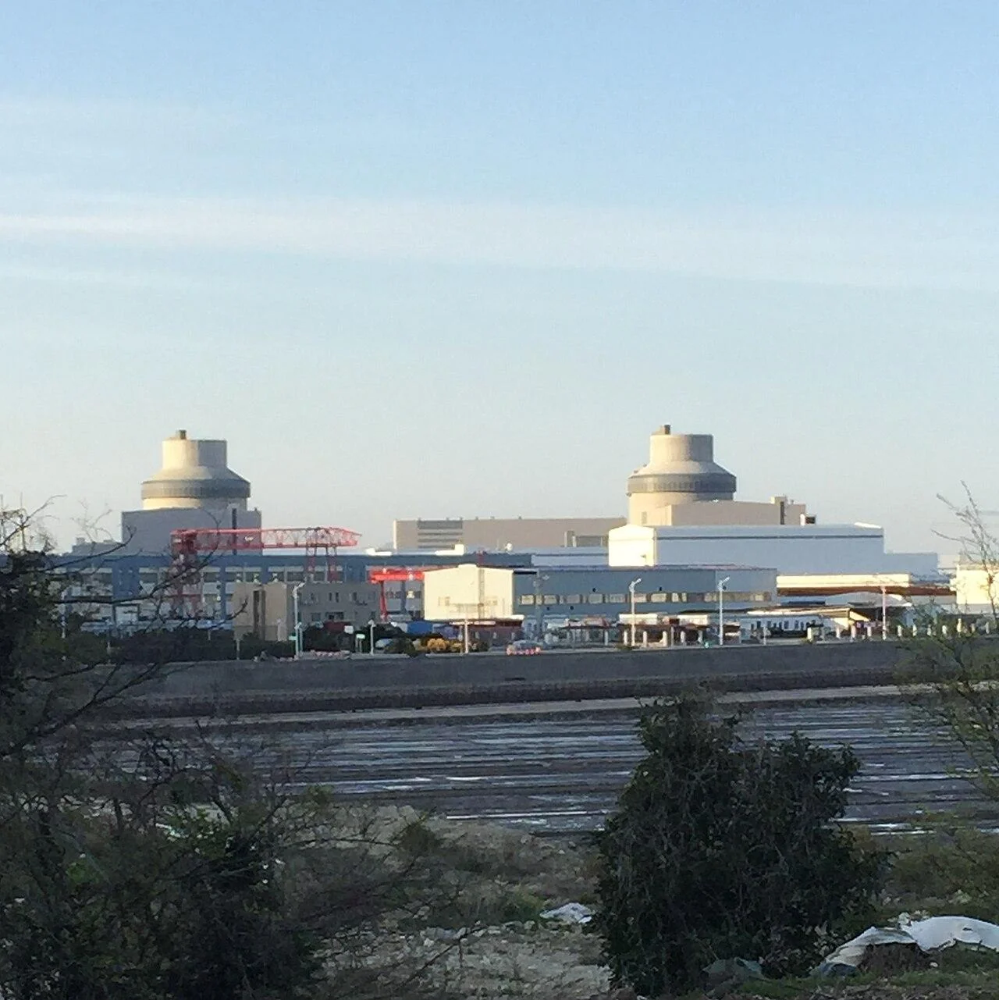
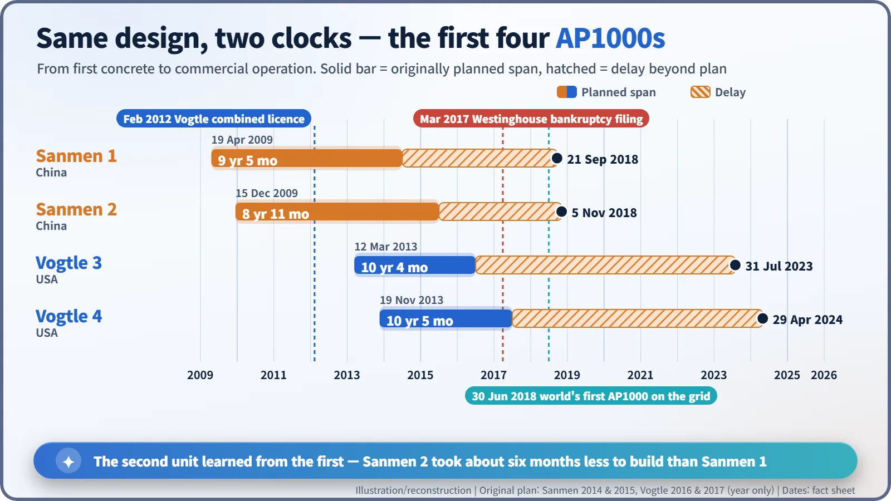
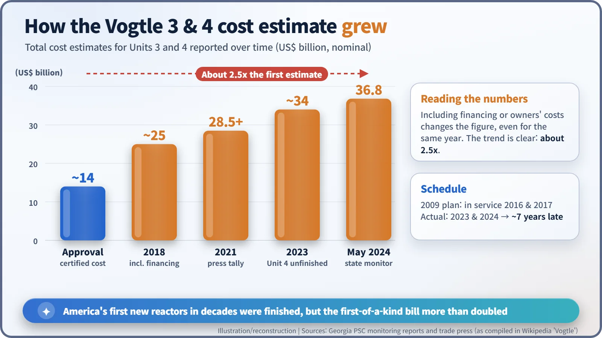

Nuclear History · 284
Same Blueprint, Two Clocks — Completing the AP1000 at China's Sanmen and America's Vogtle 3 and 4
China poured the first AP1000 concrete in 2009 and had Sanmen 1 on the grid in 2018; Georgia's Vogtle 3 and 4, licensed in 2012, survived a vendor bankruptcy to start up in 2023 and 2024.
Westinghouse's AP1000, a reactor designed to cool itself after an accident without pumps or operator action, was first built not in the United States but in China. Sanmen 1 became the world's first AP1000 to generate power in June 2018; America's Vogtle 3 and 4 followed in 2023 and 2024, years late and far over budget. Same design, two very different clocks.
Same blueprint, two clocks
On 26 October 2020, a group of inspectors from the US Nuclear Regulatory Commission (NRC), in hard hats and high-visibility vests, stood on a construction site near Waynesboro, Georgia. Behind them rose a huge cylindrical building wrapped in scaffolding: the shield building of Vogtle Unit 3. Seven and a half years after its first concrete was poured, it had not produced a single kilowatt-hour. Meanwhile, on the other side of the Pacific, at Sanmen in China's Zhejiang province, a reactor built to the same design had been sending power to the grid for more than two years. Why did the two clocks run so differently? [3]

A reactor that cools itself without pumps
The design in question is Westinghouse's AP1000. The "AP" stands for Advanced Passive. If an accident cut off all electrical power, the plant was designed to keep its core cool without pumps or operator action, relying on gravity, natural circulation and compressed gas. A large water tank sits on top of the shield building; in an emergency its water runs down the outside of the steel containment vessel and carries heat away. The design goal was to cope for about 72 hours with no operator intervention. The AP1000 scaled up the earlier AP600 (certified in 1999) to roughly the 1,100-megawatt class and received its US design certification in 2006. [7]
On paper it was elegant. The real question was who would build one first.
China breaks ground first
In July 2007, Westinghouse signed contracts with China's State Nuclear Power Technology Corporation (SNPTC) and project companies for four AP1000 units: two at Sanmen in Zhejiang and two at Haiyang in Shandong. Technology transfer was part of the bargain: while building these four, Westinghouse would hand over the know-how so that China could build later units itself. Public information on the exact scope of that transfer is limited. [1]
On 19 April 2009, Sanmen 1 poured its first concrete, making it the first AP1000 under construction anywhere. The original plan was to start operating in 2014. The holdup came from an unexpected place: the plant's "heart". The reactor coolant pumps are sealed "canned-motor" pumps (the motor is sealed in with the water, so there is no shaft seal to leak), and if power is lost they must keep spinning for a while on their own momentum to keep water moving through the core. The US-made pumps ran into quality problems; in 2013 three of them were shipped back to the United States, and the last modified pump was not installed until March 2016. [1] [2]
Sanmen 1 reached criticality on 21 June 2018 and was connected to the grid on 30 June 2018, the first AP1000 anywhere to generate electricity. It entered commercial operation on 21 September, with a net output of 1,157 MWe. Unit 2 followed on 5 November 2018. From first concrete to commercial operation it took 8 years and 11 months, about six months less than Unit 1's 9 years and 5 months. [2]

America's first construction licence in 34 years
In the United States, the story began in earnest on 9 February 2012, when the NRC commissioners voted 4–1 to approve combined construction and operating licences (COLs) for Vogtle Units 3 and 4. It was the first approval to build a new nuclear plant since 1978, and the first use of the one-step licence that covers both construction and operation. [4]
Unit 3's basemat concrete was poured on 12 March 2013, with operation planned for 2016 and 2017. But the idea of building large modules in factories and assembling them on site stumbled on its first attempt. In March 2017, Westinghouse, the main contractor, filed for Chapter 11 bankruptcy protection, against a background of heavy losses on fixed-price contracts. On 31 July of the same year, the two AP1000 units being built at V.C. Summer in South Carolina were halted at about 64% complete. [3] [5]
Vogtle 3 finally reached criticality on 6 March 2023 and entered commercial operation on 31 July 2023, the first new reactor in the United States in seven years. Unit 4 reached criticality on 14 February 2024 and began commercial operation on 29 April 2024. With 1,117 MWe net per unit, Vogtle became the largest nuclear plant in the country and the only one with four reactors. [3]

What did the lessons cost?
Cost figures need careful reading, because the totals change depending on whether financing and owners' costs are included. Following Georgia's state monitoring reports and press coverage, the estimated total for Units 3 and 4 was about $14 billion at approval, about $25 billion in 2018 and about $34 billion in 2023. One tally citing a May 2024 state monitoring report puts it at $36.8 billion. Operation started about seven years later than planned. [3]

Whether this counts as a failure or as finishing the race is still debated. Two things are clear. Even with the same design, the first unit is expensive, and the second goes faster. At Vogtle, Unit 4 entered commercial operation just nine months after Unit 3.
What came next
China developed the AP1000 into the localised CAP1000 (Sanmen 3 started construction in 2022 and Sanmen 4 in 2023) and the larger CAP1400, "Guohe One", whose first unit entered commercial operation at the end of 2024. [1] [2]
In the United States, the government, Westinghouse and partners announced in October 2025 an $80 billion partnership for new AP1000 reactors, and a new developer is studying how to finish the abandoned V.C. Summer units. Going by the latest reports found as of November 2026 (from May 2026), V.C. Summer still awaited a final investment decision, and the $80 billion plan was still turning into specific sites and contracts. The ending is still open. [6]